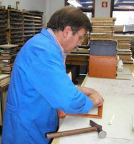

EncadernaçãoUma forma
Uma forma
para cada livro.
A encadernação manual dá estrutura e proteção ao volume. A Invicta Livro apresenta trabalho que respeita a época e o estilo dos livros antigos, e também encadernações de expressão contemporânea.
O tipo de livro e a utilização pretendida são o ponto de partida para conversar sobre materiais e acabamento.
